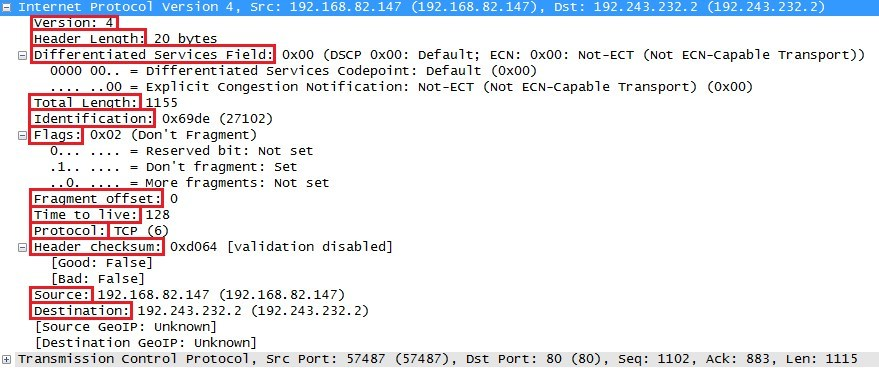

📍 Position in OSI: Layer 3 (Network), the payload of Ethernet framesمكانه في OSI: الطبقة 3 (Network)، جوه Ethernet frames
IPv4 Packet Header
Lesson 3 — every field in the IPv4 header, explainedالدرس الثالث — هيدر حزمة IPv4 بالتفصيل
Quick recap quizاختبار مراجعة سريع
Overviewنظرة عامة
From the source (PDF)من المرجع (PDF)
The IPv4 header has quite some fields. Let's take a look at them and explain what everything is used for.
هيدر IPv4 فيه شوية حقول (fields). هنشرح كل واحد منهم لوحده ونوضح هو بيتعمل لإيه.
Version (4 bit)IPv4 → always 4
IHL — Header Length (4 bit)header length in 32-bit units
Type of Service (8 bit)used for QoS
Total Length (16 bit)header + data, in bytes
Identification (16 bit)same ID on every fragment of one packet
IP Flags (3 bit)0 / DF / MF
Fragment Offset (13 bit)position of this fragment
TTL (8 bit)-1 per hop
Protocol (8 bit)TCP=6 / UDP=17
Header Checksum (16 bit)error check on header
Source Address (32 bit)
Destination Address (32 bit)
IP Option (variable)rarely used, optional
Datathe actual payload
The 20-byte minimum IPv4 header, field by field (self-drawn, matches the PDF layout)هيدر IPv4 الأدنى 20 بايت، حقل حقل (رسم بسيط بنفس ترتيب المرجع)
🖼️ Diagram: Complete 32-bit IPv4 Packet Header format (RFC 791)
The fields, one by oneالحقول واحد واحد
From the source (PDF)من المرجع (PDF)
- Version: tells us which IP version we're using — only IPv4 uses this header, so you will always find decimal value 4 here.
- Header Lengthطول الهيدر (IHL): a 4-bit field, the length of the IP header in 32-bit increments. The minimum header length is 20 bytes, so with 32-bit increments you would see value 5. The maximum 4-bit value is 15, so the maximum header length is 60 bytes. Also called the Internet Header Length.
- Type of Service: used for QoSجودة الخدمة — Quality of Service. There are 8 bits we can use to mark the packet, giving it certain treatment.
- Total Length: a 16-bit field indicating the entire size of the IP packet (header and data) in bytes. Minimum size is 20 bytes (no data), maximum is 65,535 bytes — the highest value you can create with 16 bits.
- Identification: if the IP packet is fragmented, each fragmented packet uses the same 16-bit identification number to identify which IP packet they belong to.
- Fragment Offset: a 13-bit field that specifies the position of the fragment in the original fragmented IP packet.
- Time to Live (TTL): every time an IP packet passes through a router, the TTL field is decremented by 1. Once it hits 0, the router drops the packet and sends an ICMPبروتوكول رسائل التحكم بالإنترنت — هندرسه في درس لاحق time-exceeded message to the sender. 8 bits, used to prevent packets from looping around forever (routing loops).
- Protocol: an 8-bit field telling us which protocol is encapsulated in the IP packet — for example TCP has value 6, UDP has value 17.
- Header Checksum: a 16-bit field storing a checksum of the header; the receiver can use it to check for errors in the header.
- Source Address / Destination Address: the 32-bit source and destination IP addresses.
- IP Option: not used often, optional, variable length. Using this field increases the value in the header length field. Example: "source route", where the sender requests a certain routing path.
- Version: بيقول إحنا مستخدمين إصدار IP رقم كام — IPv4 بس هو اللي بيستخدم الهيدر ده، فهتلاقي دايمًا رقم 4 هنا.
- Header Length (IHL): حقل 4 بت بيحدد طول الهيدر بوحدات كل وحدة = 32 بت. أقل طول للهيدر هو 20 بايت، يعني القيمة هتبقى 5. أكبر قيمة ممكنة بـ4 بت هي 15، يعني أكبر طول ممكن للهيدر 60 بايت. اسمه كمان Internet Header Length.
- Type of Service: بيُستخدم لـ QoS (جودة الخدمة). في 8 بت نقدر نستخدمهم نعلّم الحزمة ونديها معاملة معينة.
- Total Length: حقل 16 بت بيوضح الحجم الكلي للحزمة (هيدر + بيانات) بالبايت. أقل حجم 20 بايت (من غير بيانات)، وأكبر حجم 65,535 بايت — أكبر رقم ممكن بـ16 بت.
- Identification: لو الحزمة اتقسّمت (fragmented)، كل جزء بياخد نفس رقم الـ 16 بت ده عشان نعرف إنهم كلهم من نفس الحزمة الأصلية.
- Fragment Offset: حقل 13 بت بيحدد مكان الجزء ده في الحزمة الأصلية اللي اتقسمت.
- Time to Live (TTL): كل مرة الحزمة بتعدي على راوتر، قيمة TTL بتقل واحد. لما توصل صفر، الراوتر بيرمي الحزمة ويبعت رسالة ICMP "time exceeded" للمرسل. 8 بت، الهدف إنها تمنع الحزمة من الدوران للأبد لو في routing loop.
- Protocol: حقل 8 بت بيقول أي بروتوكول متغلّف جوه IP — مثلاً TCP قيمته 6، UDP قيمته 17.
- Header Checksum: حقل 16 بت بيخزن checksum للهيدر؛ المستقبل بيستخدمه يتأكد مفيش أخطاء في الهيدر.
- Source / Destination Address: عنوان IP المصدر والوجهة، كل واحد 32 بت.
- IP Option: نادرًا ما بيُستخدم، اختياري، وطوله متغير. استخدامه بيزوّد قيمة حقل طول الهيدر. مثال: "source route" حيث المرسل بيطلب مسار معين للتوجيه.
Extra explanation (not from the PDF — a different way to picture it)شرح إضافي (مش من المرجع — طريقة تانية تتخيل بيها الفكرة)
Three quick everyday analogies: TTL is like the number of transfers printed on a bus ticket — each transfer stamps it once, and once the stamps run out the ticket (packet) is thrown away instead of riding forever. Header Checksum is like a padlock seal on a shipped box: if the seal looks tampered with on arrival, you know not to trust what's inside without even opening it. Fragmentation (Flags + Fragment Offset) is like mailing a large poster that doesn't fit one envelope: you cut it into numbered strips (Identification says "these strips belong together", Fragment Offset says "this strip goes here"), and the last strip is marked so the receiver knows when to stop taping pieces together.
3 تشبيهات يومية سريعة: TTL زي عدد مرات التحويل المطبوعة على تذكرة أتوبيس — كل تحويل بيخُتم مرة، ولما الأختام تخلص التذكرة (الحزمة) بترمى بدل ما تفضل ماشية للأبد. Header Checksum زي ختم قفل على طرد اتشحن: لو الختم شكله متلعب فيه لما يوصل، تعرف متثقش اللي جواه من غير ما تفتحه أصلاً. التقسيم (Flags + Fragment Offset) زي إنك تبعت بوستر كبير مش داخل في ظرف واحد: بتقطعه شرايح مرقّمة (Identification بيقول "الشرايح دي مع بعض"، وFragment Offset بيقول "الشريحة دي مكانها هنا")، وآخر شريحة بتتعلّم عشان المستقبل يعرف يوقف يلزّق.
IP Flags in detailتفاصيل حقل الأعلام
From the source (PDF)من المرجع (PDF)
- The first bit is always set to 0.
- The second bit is called the DF (Don't Fragment) bit and indicates that this packet should not be fragmented.
- The third bit is called the MF (More Fragments) bit and is set on all fragmented packets except the last one.
- البت الأول دايمًا بيبقى 0.
- البت التاني اسمه DF (Don't Fragment) ومعناه إن الحزمة دي ماينفعش تتقسّم.
- البت التالت اسمه MF (More Fragments) وبيتحط على كل أجزاء الحزمة المقسّمة إلا آخر جزء.
Extra explanation (not from the PDF — a different way to picture it)شرح إضافي (مش من المرجع — طريقة تانية تتخيل بيها الفكرة)
DF matters a lot in real networks — it is exactly how Path MTU Discovery works. If a router needs to fragment a packet that has DF set, it drops it instead and sends back an ICMP message saying "too big"; the sender then shrinks its packet size and tries again.
DF ده مهم جدًا في الشبكات الحقيقية — بيُستخدم بالظبط في اكتشاف الـ MTU (Path MTU Discovery). لو راوتر محتاج يقسّم حزمة عليها DF، هيرميها بدل ما يقسّمها ويبعت ICMP يقول "كبيرة قوي"؛ المرسل وقتها بيصغّر حجم حزمته ويحاول تاني.
A real packet in Wiresharkحزمة حقيقية في Wireshark
From the source (PDF)من المرجع (PDF)
Here's a real-life example of how these fields look in an actual captured packet:
ده مثال حقيقي لشكل الحقول دي في حزمة اتلقطت فعليًا:
| Field | Value |
|---|---|
| Version | 4 |
| Header Length | 20 bytes |
| Total Length | 1155 |
| Identification | 0x69de (27102) |
| Flags | 0x02 (Don't Fragment) |
| Fragment offset | 0 |
| Time to live | 128 |
| Protocol | TCP (6) |
| Header checksum | 0xd064 [validation disabled] |
| Source | 192.168.82.147 |
| Destination | 192.243.232.2 |

🖼️ Wireshark capture of IPv4 Header showing TTL, Protocol, Checksum, and IPs
Summaryملخص الدرس
From the source (PDF)من المرجع (PDF)
- The IPv4 header is 20 bytes minimum, up to 60 bytes with Options.
- Protocol, Source Address, Destination Address and Data are the fields you'll use the most day to day.
- TTL protects the network from routing loops; Flags and Fragment Offset handle fragmentation.
- هيدر IPv4 أقله 20 بايت، وممكن يوصل 60 بايت لو في Options.
- Protocol و Source Address و Destination Address و Data هما أكتر حقول هتستخدمها في الشغل اليومي.
- TTL بيحمي الشبكة من الـ routing loops؛ Flags و Fragment Offset بيتعاملوا مع التقسيم.
🧠 Lesson quiz🧠 اختبار الدرس
Wrong = red, correct = green. Reveal the answer any time and translate any question with the 🌐 button.غلط = أحمر، صح = أخضر. تقدر تشوف الإجابة في أي وقت وتترجم أي سؤال بزرار 🌐.